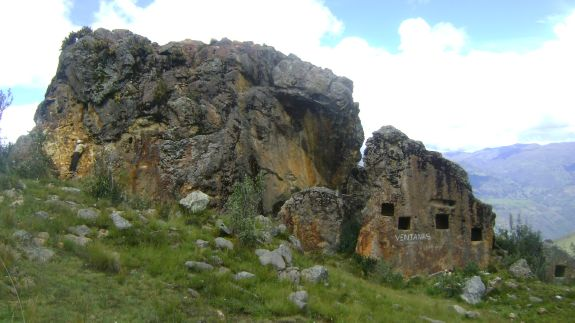

CERRO WUALLIO

Ubicación: Está situado al noreste del Distrito de Cachicadán.
Altura: 4 310 m.s.n.m
Clima: es frío, debido a la elevación y a los vientos locales presentes en la zona; la temperatura media anual fluctúa entre 7 y 10 ºC, las máximas llegan a 20 ºC y las mínimas invernales alcanzan hasta -1 a -16 ºC.
RESEÑA HISTÓRICA
En el lugar se puede apreciar un grupo de 4 ventanas conservadas talladas en un área específica de roca; únicas en todo el Perú, sin embargo al recorrer esta zona se pueden apreciar otros restos de roca que señalan el desprendimiento de este y permiten emitir la hipótesis de que pertenecieron a una misma unidad arquitectónica.
Las ventanas son talladas en la roca trabajadas para colocar los sacrificios, estas ventanas son un misterio pero posiblemente fueron utilizadas como nichos funerarios, igual a las ventanas de Otúzco (Cajamarca). Ventanillas de Paccha, en realidad poco se sabe de sus constructores y los fines de su excavación en la roca, son llamados nichos funerarios, pero el nombre que más lo identifica son ventanillas.
En su entorno están asentados restos arqueológicos que son vestigios de nuestra historia, riqueza de nuestros antepasados.
Más adelante se pueden apreciar un grupo de tinas esculpidas en piedra muy peculiares, en ciertas aristas de la parte plana del Wuallio. Se caracterizan porque están construidas en la misma roca. Son cinco tinas.
Las dos primeras tienen las medidas de 1.04 cm de lado y 0.95 cm de lado respectivamente, es decir, son cuadrados, la tercera tina está más alto, de un metro de lado y un metro de profundidad, esta tina es que se observa un canal, que fue construido junto al borde, para evitar que el agua de la lluvia ingrese a dicha tina. Un poco más hacia el norte y en el relieve más bajo; pero en una superficie plana que parece se construyó previamente la plataforma, con las dimensiones anteriores
PLATO TÍPICO
CUY GUISADO
Ingredientes
-Cebolla de hoja-Ají Rojo y amarillo
-Pimienta
-Comino
-Oregano
-Ají escabeche
-Aceite
-Limón
-Chicha.
-Cuy
-Mote Partido
-Papa amarilla
Preparación
1. Se corta el cuy en presas, luego se condimenta en sal, ají amarillo y rojo, luego se agrega la cebolla y el ají escabeche en tiritas, luego se deja cocinar a fuego lento.2. El arroz de mote partido de trigo se adereza con aceite ajos y sal, agregando agua hasta que hierva luego se echa el arroz de mote dejándole sancochar al fuego lento hasta que seque a punto.
3. La papa se sancocha después que está lista se pela y se ubica en el plato junto al arroz y el cuy, baja una porción de zarza de cebolla de hoja al limón.
4. Se utiliza como plato favorito en cualquier ocasión en nuestro medio. Adicionalmente puede disfrutar este plato con un vaso de chicha de jora.